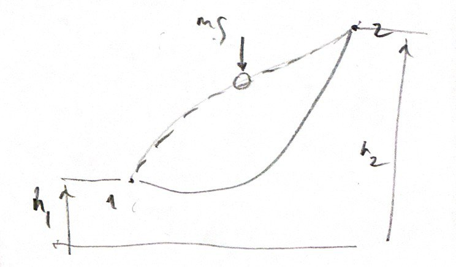
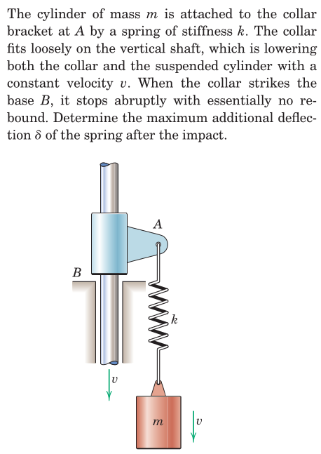

Linear motion is insufficient in describing the dynamics of motion that involves rotations in addition to translations.
(PICTURE)
EXAMPLE: A system of two masses connected by a rigid link rotating about the center of the link, zero linear momentum yet motion prevails.
As linear momentum runs short of the description of rotational motion, there is a need to introduce this type of motion with a new vector.
(PICTURE)
For that, an observation point \(O\) is introduced about which rotational effects are described. \[ \boldsymbol{r} \times \boldsymbol{G} = \boldsymbol{H}^O \]
(Note that the rotational vectors resulting from the cross product (e.g. rotation, moment, angular moment, etc.) have a different nature compared with ordinary (e.g. force) vectors. Their designation include a double-arrow.)
The mathematics of the cross-product operation involves cyclic permutations of the argument vector components.


From Hibbeler, Engineering Mechanics: Dynamics: Chapter 15: